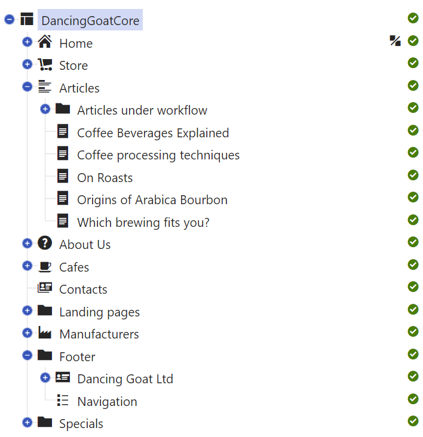
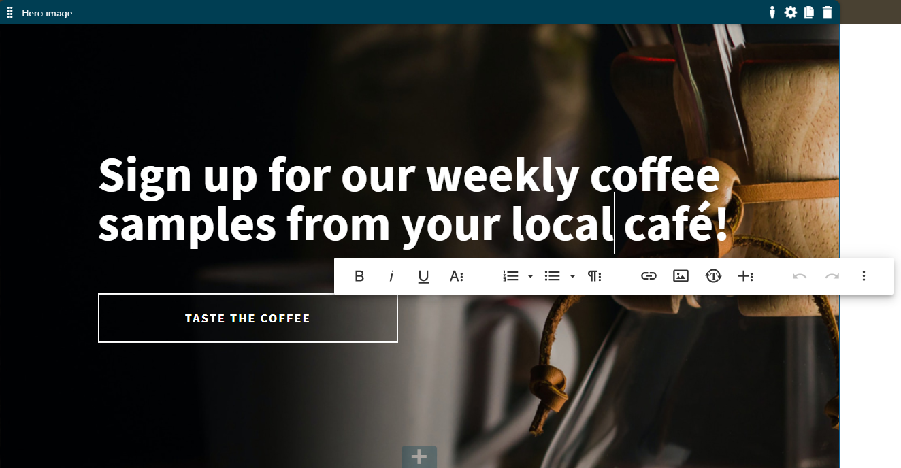
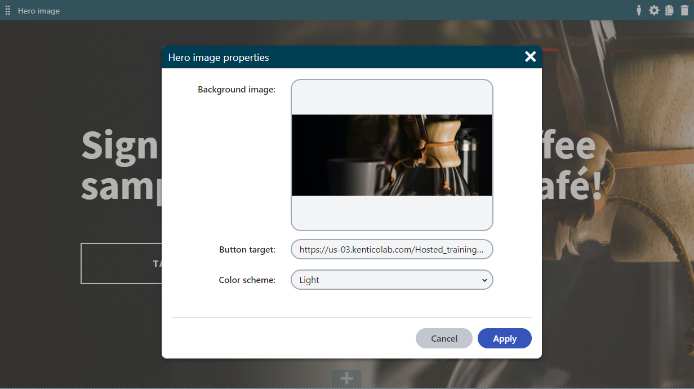

Storing content in Xperience
On this page, we'll cover the options for creating, storing, categorizing, and managing content in Kentico Xperience.
When starting to work on your project, it's important to carefully consider all possible options of content storage and pick to most suitable approach for the needs of your project. In each section, you can read about the benefits of the particular approach, as well as find links to the relevant pages in our documentation.
Learn about:
Creating and managing content
Once you have your project requirements ready, you can evaluate the options for storing content in Kentico Xperience. From a high-level perspective you can look at creating and managing content in Xperience in three different ways:
|
Content is created |
Content is managed |
Description |
|
Inside Xperience |
Inside Xperience |
Xperience database becomes a single source of truth for all the content, e.g., various marketing materials, company-specific information or product-related documents. Before editors start producing their content, the developers must prepare the data structures (i.e., content objects) in the administration and the storage. |
|
Outside Xperience |
Inside Xperience |
Editors can create content before or parallel to the development. They can use another solution and work on their content before the site is ready. When the development of the website progresses, developers import the new content to Xperience using Xperience API. Content editors can also prepare their content in spreadsheets or in some other system with data structures. Developers will then map and import the content using the Xperience API or via the Import Toolkit. |
|
Outside Xperience |
Outside Xperience |
This option is typically used for content that needs to be managed using a specific external system, e.g., various ERP or PIM solutions for managing product catalogs. The content is either synchronized to Xperience using scheduled tasks , the Integration bus or pulled directly from the external system at runtime (e.g., web services, SDKs, etc.). Note that this option introduces several competing content management systems into the setup. Duplicating content management systems can cause complications. For example, when content editors see an error on the live website, it may be difficult to identify where they can edit this specific content. |
Storing and managing content directly in Xperience is the recommended option for most projects. It ensures that Xperience is a single source of truth for content that will be distributed across different channels. Editors know where the content they are responsible for resides.
Storing content in Xperience also prevents synchronization errors with 3rd party integrations, and implies that editors have always the latest version of the content available in one place.
We also recommend storing content in Xperience if the editors want to leverage online marketing features, such as page A/B testing or reusing site content in email builder .
For managing content of larger projects (or projects that are already live), we recommend using a staging environment rather than directly editing the content in production and using content management workflows. (see below )
The main building block of storing content in Xperience are sites grouped under one or more instances.
An Xperience instance is an installed version of the Kentico Xperience application. Within one Xperience instance, you can have any number of sites.
Xperience website project consists of:
the administration application (built with the .NET 4.8 Web Forms),
live site application(s) (built with the .NET Core or .NET 4.8 - MVC 5),
and a shared database (SQL server).
Each site runs on its own domain name, for which you need a valid license. Each site then stores its content in a separate content tree (see below).
Storing content in Xperience
Xperience offers different ways to store and organize your content. The following options allow for separating the data from their presentation (i.e., what will the data look like when displayed on the website). Each of these options, or more commonly their combinations, can be used to define content types that editors will use to add content to their websites.
For storing content in Xperience, you can use:
Pages
Pages are hierarchically organized in a content tree and are managed in the Pages application.
Media files
Individual media files, such as images, videos or even large packaged files can be stored in media libraries, as attachments or in separate 3rd party applications.
Custom modules
Modules store the website content without the content tree and its hierarchy.
Custom tables
Tables store content in a flat data structure without additional benefits, e.g., versioning or storing the same content in different languages.
See an overview of the differences between Pages, Custom modules, and Custom tables on the Defining website content structure ( LINK ) page .
Pages
Pages are represented in a visual hierarchical structure called the content tree and managed in the Pages application.

Content types used in the content tree are based on page types. Page types define the basic structure of each content type and serve as a blueprint for every content item (i.e. page) created with this page type. For example, every article made from the Article page type will have the same properties.
However, even though the name "page type" suggests it, not every item in the content tree needs to represent a specific/single page on the website. From this point of view, editors can create three types of pages in the Pages application:
|
Pages with dedicated URLs/slugs |
|
|
Page items |
|
|
Folders |
|
Depending on the website implementation, the content tree-based routing feature can generate page URLs based on their position within the content tree hierarchy. Learn out more about features related to pages with URLs:
See our recommendations on when should you use pages to store content ( LINK ) and what are the limitations of using pages for storing content ( LINK ) .
Types of content stored in Pages
Content types used in the Pages application are based on page types. These page types are very versatile in how they can store content. In general, we recognize two types of content stored in pages:
structured content,
and page builder content.
Structured content
Structured content allows editors to store content using fields without the need to focus on the layout. Editors manage the data on the Content tab and then lay it out using the page templates (for pages with URLs) or the page builder widgets (within editable areas). Editors define their content through standardized format (and thus more easily understood and classified by search engines).
From the developer's perspective, the structured content data is strongly typed, stored in dedicated database tables for each page type, and then retrieved and displayed on the live site application. Developers can use general MVC development conventions to retrieve the structured data with Xperience API and define different content components that editors can use to display the data on the live site.
Structured content is the preferred way of building content on Xperience websites. It provides editors with the means to create and store quality, reusable and future-proof content.
We recommended using structured content for:
Pages with non-changing content structure combined with page templates, such as Articles, Product pages, listing pages, biographies.
Creating a content repository for content stored within the tree that will be (or has the potential to be) used in multiple places on the website or via different channels, for example, for the core content identified in the content strategy audit. Developers can build a functionality that allows editors to reuse this content through other structured pages, page builder widgets, or linked pages (see below). For example, contact information, FAQs, videos, testimonials, etc.
Page builder widgets that always require a specific type of content, e.g., a hero widget, cards, tabbed sections, etc., and will be reused, e.g., in digital marketing campaigns.
Page builder content
The Page Builder is a user-friendly UI feature which allows editors to manage the website's content and layout using configurable page components, such as widgets and sections.
Editors work with the Page Builder in the Pages application on the Page tab and use it to construct entire pages or their sections. Developers prepare page builder components based on project requirements. These ready-made components help editors layout their content without the need to ask developers for help every time they want to build a new page or adjust the design of an existing page.
For example, on the Page Builder editors can:
edit the content of the widgets in a WYSIWYG manner using inline editors (e.g., format the text, upload background images, etc.),
alter the widget's look or behavior by adjusting the widget’s configuration dialog,
or even use combination of both (such as the Hero image or Banner widgets on our Dancing goat sample site).
In general, we recommend using the Page Builder as a tool to layout and design the content stored in a structured format. This approach helps editors focus on creating quality content and reusing it when they need it.
We recommend using page builder content for:
Parts of the page to allow for content personalization.
For example: above-the-fold content on high-traffic pages (home page), prominent areas on listing pages (articles page), project-specific category or product-category pages, user profile pages, or shopping cart checkout pages.
Entire pages when creating one-off marketing campaign pages.
When working with the Page Builder, you can use the Rich text and Online form widgets provided out of the box.
Pages are the most common way for storing content in Xperience websites.
Find out more about:
Setting up content tree structure for a large number of pages
Choosing the format of page content (when deciding between the structured and page builder content)
Media files
Media play an essential part in defining the user experience on a website. Besides images and videos, companies often need to manage product documentation, legal contracts, share packages, etc. Kentico Xperience allows you to upload files (e.g. GIF, JPG, SWF, PDF, XLS, DOC, ...) to the Xperience database or file system and manage them as any other content.
You can manage files in Xperience using three different approaches:
Media libraries
Attachments
3rd party DAM platforms
Media libraries
Media libraries store the files on the disk and allow for easy distribution over CDNs. Editors can upload, manage or update the files and their properties, such as their names or descriptions, using the administration interface. Editors can also reuse the files across the website and other channels, such as email. For example, editors can use files stored in media libraries to create image or video galleries, or just use the libraries for managing large amounts of files of different types.
Media library files can be also uploaded using the file system. Editors can create a hierarchy of subfolders inside their media libraries and move and reorder the stored files. However, moving files between different media libraries requires access to the files system.
Read more about when should you use media libraries to store content.
Using media libraries is the recommended approach for storing files. We namely recommend storing your website’s files in media libraries when:
You are keeping a large number of files or storing large files.
You need to serve the files from a CDN.
You plan to reuse the files in other channels.
You don't need file versioning.
Based on the size of the editing team and the way the team works, we recommend creating a more granular system of media libraries rather than creating a massive media library with a complex subfolder structure.
To enable search in media files, we recommend that developers create a custom smart search indexer as the binary data of media library files are not searchable by default.
Avoid using media libraries if you need to secure the files, as the files are always accessible under their URL. Instead, you can use either page attachments or handle access authorization through the IIS to restrict access to specific files.
Attachments
Page attachments associate media files with a specific page and follow the life-cycle and restrictions of the page they are attached to. It means that when editors remove the page, the attached files are also removed.
We recommend using attachments:
In multilingual scenarios when the content of files attached to pages needs to be language-specific.
When you need to associate file(s) with a specific page, use the built-in page lifecycle features, such as Versioning or Workflows, to handle the attached file.
You need to restrict access to a file based on specific permissions, e.g., in a secured section of the website.
Note that attachments might be replaced in the next generation of Xperience by enhancing the capabilities of media library files.
3rd party DAM platforms
Instead of using the built-in Xperience media libraries or page attachments, you can also manage all your assets through an integrated 3rd party Digital Asset Management (DAM) solution.
Xperience offers integrations with:
Bynder DAM platform using the external Kentico Xperience integration with Bynder that’s installed as a NuGet package.
MS Sharepoint that allows you to display data from Sharepoint on your website.
You can also develop a custom integration with any other 3rd party DAM platform.
Custom module classes
With custom modules , developers can extend the out-of-the-box Xperience functionality. Content-wise, the custom modules allow creating custom objects and database tables with relationship systems (e.g., 1:M, M:N bindings) for complex customer scenarios.
Find out more about when should you use module classes to store content.
Content types stored in custom modules can accustom for almost any content structure. You can create content types build using only custom modules or that combine data stored in both custom modules and pages. Data stored in custom module cannot be versioned through workflows.
Use custom modules when you need to:
Build a hierarchical and searchable data structure that allows for an easy editing experience in Xperience administration without all the built-in features of pages and the content tree.
Store large amounts of data in a flat structure using the standard data types (int, string, etc.) and one-to-many relationships (radio buttons, drop-down lists, etc.).
Store data in a single language. The data can only be translated using localization macros .
To use the on-line marketing features on content stored in custom module classes (e.g. personalization), we recommend building customizations that reuse stored data via widgets or handle it directly in code (e.g. personalize directly in code).
Based on your project requirements, we recommend using the schemas available at Schema.org as a reference when defining which properties your content types should contain.
Custom tables
Custom tables allow you to store large amounts of content without the hierarchy provided by pages (see above).
Developers can create custom database tables, and content editors can manage the table data directly from the administration interface without accessing the database or knowing MS SQL language.
Find out more about when to use custom tables and their limitations.
Use custom tables when you need to store many items in a flat data structure, i.e., without the content tree hierarchy of pages.
Custom tables are particularly useful when using standard data types (int, strings, etc.) and one-to-many relationships (radio buttons, drop-down lists, etc.).
Taxonomies
Xperience offers several different ways of how you can categorize pages and organize content stored in pages. Page category properties can be used for page filtering and faceting (in searches) or to present related content for specific pages. You can categorize pages:
based on the content tree structure,
using categories,
using page relationships,
using tags,
or based on a custom functionality for categorization.
Content tree structure
One of the most common ways of categorizing pages is creating page categories directly in the content tree, using parent pages as categories. Editors can use the linked pages functionality to include a single page into multiple categories, i.e. under multiple parent pages in the same content tree.
Read more about using the content tree structure in Categorizing pages.
Categories
You can handle page taxonomy using the built-in categories (Assigning pages to categories) feature. Categories allow you to create a hierarchical structure (using sub-categories). Pages can then belong to any number of categories.
Read more about taxonomy based on categories in Categorizing pages and in Configuring categories.
Page categories are stored in a hierarchical structure bound to the CMS_Document table, meaning they are language-specific and don't need to fit every multilingual scenario.
Page relationships
Related pages allow you to create "named relationships" between pages in the content tree. Content editors can build explicit connections between specific pages or use related pages for more complex scenarios. For example, developers can create a dedicated Category page type that will be used in a dedicated Categories section in the content tree. Editors will then manually assign these categories as relationships to pages (or sections in the content tree). Developers can also use the names relationships to build advanced search scenarios.
Tags
Similar to categories, tags (Tagging pages) provide another option for creating page taxonomic properties. Unlike categories, the tags don’t have a hierarchical structure. Unless organized into predefined tag groups, tags have a flat structure.
Find out more about tags in Categorizing pages and in Configuring tags.
Custom functionality for categorization
If none of the taxonomy options serve your project requirements, you can build your own custom functionality for categorization. For example, this 3rd party custom module was developed as a custom categorization functionality.
Building simple categorization
Use the hierarchy of the content tree. Consider the following options when categorizing pages:
The parent page can serve as a category, the child items as pages within that category.
If editors want to reuse the same page item across the content tree, consider using the linked pages that allow editors to "add" a page into multiple categories in the content tree.
Building complex categorization
Use categories to help editors manage page taxonomy in a hierarchical "tree-like" structure. Content editors can then assign pages to multiple categories on different hierarchical levels.
For example, an editor can assign an iPhone page to the following categories: cell phone, cell phone -> smartphone, and Apple.
Use page relationships with a custom category page type for larger, more complex taxonomy groups (where the built-in categories feature doesn't suffice). Simple use of page relationships can allow editors to identify related content manually, e.g., related news stories.
Use tags when you need a flat, non-hierarchical structure that classifies pages based on various criteria (e.g., topics).
Bear in mind that using tags requires mature content governance from the editor team. Our experience with customer projects shows that editors tend to misuse tags, which consequently brings additional strain to developers.
Use field references when you need to reference another object of a specific object type in a custom-built functionality, e.g., assign a country (built-in object) to an office page.
You have learned about the options of storing data in Xperience and how you can model taxonomies. On the next page, you’ll learn about different approaches of presenting this data in your web application.